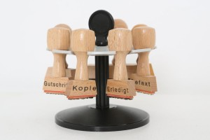

Papierloses Büro-Wofür braucht man noch Stempel?
Papierloses Büro-Wofür braucht man noch Stempel?

Stempel (Foto Tim Reckman, pixelio)
Moderne Technik löst zunehmend händisch-aufwändige Arbeitsaufgaben im Alltag ab. Aber neulich bei meiner Beobachtung in einem Unternehmen musste ich eingestehen, dass es auch hin und wieder noch Gründe dafür gibt, bewährte Arbeitsmittel und Arbeitstechniken losgelöst von der technologischen Entwicklung zu nutzen. Das papierlose Büro wird bereits in vielen Unternehmen angestrebt, schließt dabei jedoch traditionelle Arbeitsweisen nicht ganz aus. Teilweise sind diese sogar erforderlich.
Bewusst geworden ist mir das beim Arbeiten in einer Kanzlei. Und so habe ich mir bei diesem Kunden nicht eine neue Software angesehen, sondern die umfangreiche Nutzung altbewährter Stempel in verschiedenen Unternehmen.
Auch wenn zahlreiche Schriftstücke am Rechner erstellt und auch online versendet werden, bleiben klassische Stempel in manchen Branchen wichtige Arbeitsgeräte. Besonders Vertragsunterlagen und amtliche Schriftstücke bedürfen zur Identifikation des Absenders eines Stempelaufdrucks. In Kanzleien und Notariaten sind z.B. immer noch Eingangsstempel üblich. Darüber hinaus erweisen sich Druckstempel selbst im modernen Büroalltag als komfortable und unverzichtbare Helfer für einige Aufgaben.
Neben den Firmen- und Adressstempeln sind es beispielsweise Datumsstempel, die besonders im Posteingang die Arbeitsabläufe erleichtern. Viele Unternehmen verfügen noch nicht über ein Datenmanagementsystem, bei dem Dateien mit Barcode gescannt werden oder benötigen dieses auch nicht. So können Schriftstücke mit einem Posteingangsstempel schnell und ohne viel Aufwand gekennzeichnet werden.
Auch Paginierstempel sind durch moderne Rechentechnik kaum zu ersetzen. Mit einem Paginierstempel lassen sich fortlaufende Zähl- und Markierungsabläufe schnell und einfach in einer zuverlässigen Form umsetzen. Die einstellbare Weiterschaltung ermöglicht unter anderem das numerisch-fortlaufende Kennzeichnen von Gutscheinen, Eintrittskarten oder anderer Schriftstücken. Auch bestimmte Produkte lassen sich in dieser Form damit markieren.
Individuell einstellbare Schriftbandstempel sind ebenfalls eine praktische Möglichkeit, Schriftstücke eindeutig zu kennzeichnen. Hier lassen sich neben unterschiedlichen Vermerken und Nummerierungen auch individuell einstellbare Kombinationen aus Schriftvermerk und numerischer Angabe verwenden. Damit sind viele Möglichkeiten denkbar, die sich auf das konkrete Anwendungsfeld ausrichten.
Eine weitere bekannte und bewährte Form sind Grafikstempel. Diese stellen eine Symbiose zwischen Adress- und Bildstempel dar. Diese Stempelform wird gerne auch von Freiberuflern eingesetzt. So lassen sich beispielsweise Adressfeld und Firmenlogo einfach zusammen-führen – auf Wunsch auch mehrfarbig. Anwendung findet dies besonders bei Angeboten und Rechnungen, aber auch im sonstigen Schriftverkehr.
Neben den hier vorgestellten Stempeln gibt es viele andere Formen, mit denen sich auch kreative Arbeiten umsetzen lassen. Bekannt sind hier Motivstempel, gerne eingesetzt im kreativen Freizeitbereich. Sie kennen das bestimmt bei Kindern, die besonders viel Freude an diesem ersten Umgang mit Stempeln haben. Umfangreiche Angebote an Stempeln aller Art bieten Onlineshops, zum Beispiel stempelpool.de.
Zusammenfassend lässt sich sagen, dass es für traditionelle und moderne Stempel auch in nahezu papierlosen Büros sinnvolle Anwendungen gibt, sie in einigen Branchen sogar unverzichtbar sind. Sie ersetzen zwar nicht moderne Schriftformen, wie Seriendruck oder Schriftverkehr per E-Mail, gehören jedoch in jedes modern geführte Büro und in viele private Haushalte. Ja, das muss auch ich als Mrs. Paperless zugeben! 😉
Weitere Artikel

Puffer sichern Flow
Es wird allerhöchste Zeit, sich von der Idee, dass nur wer am Limit arbeitet, effizient sei, zu verabschieden. Unter Volllast, ganz ohne Puffer zu arbeiten ist eine „gute“ Voraussetzung für Unzuverlässigkeit, Fehler …
Die Kollaboration in einem internationalen Team organisieren
Für erfolgreiche Kollaboration im Team sind viele Bausteine nötig. Natürlich müssen alle das Ziel kennen, der Teamspirit muss stimmen, aber es muss auch die tägliche Zusammenarbeit im Team „flutschen“. Das heißt, die …